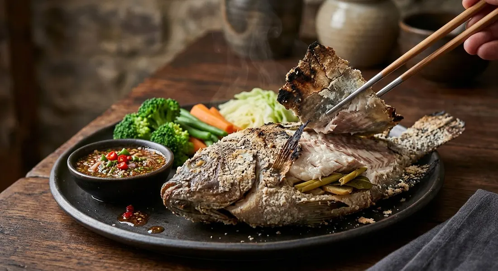

A whole fish packed in a salt-and-flour crust, stuffed with herbs and grilled over charcoal until the skin peels off in one sheet — then pulled apart with a jaew sauce, boiled vegetables and khanom jeen wraps.

ปลาเผา means simply "grilled fish", but what makes it a dish and not a technique is the jacket. The whole fish — scales still on, head and tail intact — is stuffed with herbs and packed in a crust of coarse salt (Kapook's recipe from Mae Baan magazine mixes 200 g of salt with two spoons of flour so it grips the scales), then set over charcoal. The crust seals in steam, so the flesh cooks in its own juice while the skin and herbs below it perfume everything. Nothing else is added; the fish is seasoned by the jacket it wears.
The stuffing is where the herbs do their quiet work. Kapook stuffs the belly with galangal, lemongrass and kaffir lime leaves; the TrueID Isan cook pushes whole lemongrass stalks into the fish's mouth instead, and PIM's kitchen ties lemongrass and pandan into a bundle. Whatever the combination, the rule is the same: herbs inside, salt outside, and the fish itself never seasoned — the crust is knocked off at the table and the skin peeled back in one sheet, PIM scoring a line along the back with a knife first so it lifts clean.
The fish alone is not the meal. A proper pla pao arrives as a set: a dipping sauce — nam phrik jaew in the Kapook version, a pla ra jaew or a lime-garlic sauce elsewhere — boiled vegetables, and miang wraps of khanom jeen with fresh herbs. TrueID's Isan recipe even renames the noodles the Isan way, ข้าวปุ้น, and seasons its sauce with ผงนัว, the local word for MSG. Kapook's dieticians put the whole set at about 310 kcal — the reason salted grilled fish became Thailand's favourite dieting dinner.
| Thai | English | Amount |
|---|---|---|
| ปลาทับทิม | Whole tilapia (tapthim) | 1 fish |
| เกลือป่นหยาบ | Coarse salt | 200 g |
| แป้งสาลีอเนกประสงค์ | Plain flour | 2 tbsp |
| ข่าหั่นแว่น | Galangal, sliced | 3 slices |
| ตะไคร้ | Lemongrass, bruised | 4 stalks |
| ใบมะกรูด | Kaffir lime leaves | 5–7 leaves |
| พริกขี้หนูแดง | Red bird's eye chillies | 15 |
| หอมแดง | Shallots | 7 heads |
| มะเขือเทศสีดา | Sida (cherry) tomatoes | 5 |
| กระเทียม | Garlic, large cloves | 6 cloves |
| น้ำมะขามเปียก | Tamarind water | 2 tbsp |
| น้ำปลา | Fish sauce | 1 tsp |
| น้ำปลาร้าต้มสุก | Pla ra (fermented fish liquid), boiled | ½ tbsp |
| น้ำตาลปี๊บ | Palm sugar | ½ tbsp |
| เกลือป่นหยาบ | Coarse salt | ½ tsp |
The Isan set (TrueID): a 1 kg Nile tilapia, about 100 g salt rubbed on thick, 2–3 lemongrass stalks in the fish's mouth, 40 minutes over medium charcoal with periodic flipping — served with a pounded lime-garlic-chilli sauce (fish sauce, sugar, ผงนัว), fresh white cabbage, sawtooth coriander and khanom jeen wraps. The oven set (Wongnai/Bambibam): 250 g salt with 1 tbsp flour or tapioca starch, lemongrass and pandan in the belly, 180°C for 40–50 minutes flipping once at 25, with two sauces — a sweet peanut one and a green chilli-lime seafood one. PIM's two-sauce set: just 1 tbsp of ground sea salt per side, no flour, and a rule of its own: never scrape the scales off, and lift the skin along a scored line to serve.
The crust recipe. Kapook and Wongnai/Bambibam mix 200–250 g salt with 1–2 tbsp flour (or tapioca starch) and rest the fish 10–20 minutes so the crust grips. PIM uses only a tablespoon of ground sea salt per side — no flour, no resting — and TrueID's Isan version just rubs salt on thick so the flesh doesn't burn. The flour crust is the classic; the plain-salt versions cook a drier, thinner jacket.
The fire and the flipping. Kapook grills over charcoal one side at a time and warns that flipping back and forth knocks the salt off; TrueID's pan method agrees and caps it at one flip. TrueID's Isan charcoal version flips periodically for a full 40 minutes. The oven camp splits again: Bambibam bakes at 180°C for 50 minutes flipping once, PIM's multi-cooker runs 250°C for 30 minutes with no flip at all.
The stuffing. Kapook's set is galangal, lemongrass and kaffir lime leaves; TrueID's pan version drops the galangal; the Isan version stuffs lemongrass into the mouth only; Bambibam and PIM pair lemongrass with pandan leaves. Everyone agrees the herbs are for the smell, not for eating.
The sauce. Kapook's nam phrik jaew is tamarind-based with boiled pla ra. TrueID's jaew pla ra gets all its sourness from roasted tomatoes and proudly skips MSG. The Isan sauce is lime-garlic-chilli with sugar and ผงนัว. Bambibam serves a sweet peanut sauce and a green seafood sauce; PIM serves a peanut-brittle sauce and a simmered tamarind-chilli one. Which is "the" sauce depends on which region is serving the fish.
Scales on or off. PIM is the loudest: never scrape the scales, never cut the head or tail — the scales hold the salt crust and protect the flesh. No other source scales the fish either, but only PIM spells it out as a rule, and only PIM scores the skin along the back so it peels off in one piece at the table.
This recipe is translated from the following Thai-language sources. Where they disagree, we've said so.
1. Kapook (นิตยสารแม่บ้าน) — "ปลาทับทิมย่างเกลือ สูตรปลาเผากับน้ำพริกแจ่ว ผักต้ม" (the recipe used here) — cooking.kapook.com
2. Kapook — "ปลาช่อนย่างเกลือ เมนูปลาเผาชุดใหญ่พร้อมผักต้มและน้ำจิ้ม" (the snakehead set and the oven fallback) — cooking.kapook.com
3. TrueID Food — "ปลาเผาเกลือน้ำจิ้มแจ่วปลาร้า สูตรไม่ง้อเตา" (the pan method, the no-flipping and doneness rules) — food.trueid.net
4. TrueID Food — "ปลาเผาสุดแซบ กับน้ำจิ้มรสเด็ด" (the Isan set) — food.trueid.net
5. Wongnai (Bambibam❤) — "ปลาเผาผักสด/เมี่ยงปลาเผา/ปลานิลเผาเกลือ แบบใช้เตาอบ" (the oven method and two sauces) — wongnai.com
6. ครัวบ้านพิม (PIM) — "เมี่ยงปลาทับทิมเผาเกลือ" (the no-scaling rule, the pandan bundle and the two-sauce set) — pim.in.th